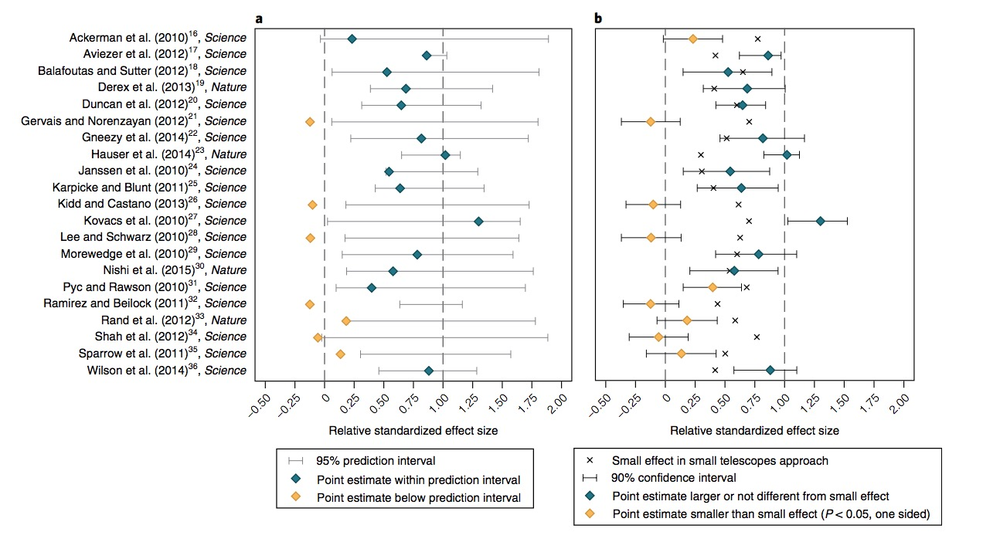

- Reproducibility in neuroscience
2018-11-16 10:17:19
Today's topics
Is there a reproducibility crisis?
- Yes, a significant crisis.
- Yes, a slight crisis.
- No, there is no crisis.
- Don't know.

Have you ever failed to reproduce an experiment?
- Someone else's
- My own

Have you ever tried to publish a reproduction attempt?
- Published
- Failed to publish
What factors contribute to irreproducible research?

- Selective reporting
- Pressure to publish
- Low power
- Replication in original labs
- Mentoring/oversight
- Methods, code, data unavailable
- Poor design
- Fraud
- Insufficient peer review
- Variability of reagents
- Bad luck

Reproducibility in Psychology
Psychology is harder than physics


Behavior has multiple, nested dimensions
Adolph, K., Tamis-LeMonda, C. & Gilmore, R.O. (2017). PLAY Project: Pilot Data Collections. Databrary. Retrieved November 16, 2018 from https://nyu.databrary.org/volume/444#panel-data
Data are sensitive, hard(er) to share
- Protect participant's identities
- Protect from harm/embarrassment
Sampling is biased
- Much (lab-based) data collected are from Western, Educated Industrialized, Rich, Democratic (WEIRD) populations (Henrich, Heine, & Norenzayan, 2010)
Even on Mechanical Turk


See also: http://demographics.mturk-tracker.com/

The sin of unreliability
- Direct replications rare, discouraged, hard to publish
- Critical methodological details go unreported
Studies are underpowered
"Assuming a realistic range of prior probabilities for null hypotheses, false report probability is likely to exceed 50% for the whole literature."
The sin of data hoarding
- Data sharing is not universal practice
- Even after a publication has gone to press
- Despite implicit agreement to do so if publishing in certain journals (e.g., American Psychological Association)
& hasn't improved since 2006
The sin of corruptibility
- Stapel was Dean of the School of Social and Behavioral Sciences at Tilburg University, teacher of Scientific Ethics course
- Fraud investigation launched when 3 grad students noticed anomalies – duplicate entries in data tables
- Stapel confessed, lost position, gave up Ph.D., wrote a book
Self-reported data fabrication, falsification, and alteration
Self-reports of questionable research practices
- Marc Hauser
- Evolutionary/Comparative Psychologist, Professor at Harvard
- Resigned 2011 after internal investigation found him responsible for research misconduct
- Details see 2012 report by NIH Office of Research Integrity (ORI) and Hauser's response.
Mistakes, e.g., flexible "stopping" rules

Errors/omissions in data
- C. Reinhart and K. Rogoff paper, http://www.nber.org/papers/w15639.pdf?new_window=1
- Omitted data in Excel spreadsheet used to model effect of public debt on economic growth. https://www.bloomberg.com/news/articles/2013-04-18/faq-reinhart-rogoff-and-the-excel-error-that-changed-history
- Error only found when data were shared.
The sin of bias…
"This article reports 9 experiments, involving more than 1,000 participants, that test for retroactive influence by "time-reversing" well-established psychological effects so that the individual's responses are obtained before the putatively causal stimulus events occur."
"We argue that in order to convince a skeptical audience of a controversial claim, one needs to conduct strictly confirmatory studies and analyze the results with statistical tests that are conservative rather than liberal. We conclude that Bem's p values do not indicate evidence in favor of precognition; instead, they indicate that experimental psychologists need to change the way they conduct their experiments and analyze their data."
Reproducibility "Crisis"
- Reproducibility Project: Psychology
- Attempt to replicate 100 experimental and correlational studies published in three psychology journals in 2008 using high-powered designs and original materials when available.
- Materials, data, protocols, analysis code shared via the Open Science Framework (OSF) from the Center for Open Science (COS)
Results published in (Collaboration, 2015)
- 39/98 (39.7%) replication attempts were successful
- 97% of original studies reported statistically significant results vs. 36% of replications

So, did the studies replicate?
- Samples not equal
- Sampling error differences predicts < 100% reproducibility
- Protocols not identical
- Only 69% of original PIs "endorsed" replication protocol. Replication rate 4x higher (59.7% vs. 15.4%) in studies with endorsed protocol.
- (Collaboration, 2015) "…seriously underestimated reproducibility of psychological science."
Camerer et al. 2018
- High-powered (90% power to detect effects smaller than original) replications of $n=$21 studies published in Science and Nature between 2010-2015
- Phase I 90% power to detect \(0.75d_{orig}\); Phase II 90% power to detect \(0.5d_{orig}\)
- "…replication sample sizes in stage 1 were about three times as large as the original sample sizes and replication sample sizes in stage 2 were about six times as large as the original sample sizes."
- "…replication and analysis plans were made publicly known on the project website, pre-registered at the Open Science Framework (OSF) and sent to the original authors for feedback and verification prior to data collecion…"

Camerer et al. Fig 1

Camerer et al. Fig 2
Summary
- significant effect in same direction for 13 (62%) studies
- effect size ~50% of the original
- replicability between 12 (57%) and 14 (67%) from complementary replicability indicators
- estimated true-positive rate is 67% in a Bayesian analysis
- prediction market valuations corresponded to 'success' of replication efforts
What do we mean by 'reproducibility'?
Inferential reproducibility
- Same inferences from one or more studies or reanalyses
Results reproducibility
- Same results from independent study
Methods reproducibility
- Enough details about materials & methods recorded (& reported)
- Same results with same materials & methods

"…psychologists tend to treat other peoples’ theories like toothbrushes; no self-respecting individual wants to use anyone else’s."
"The toothbrush culture undermines the building of a genuinely cumulative science, encouraging more parallel play and solo game playing, rather than building on each other’s directly relevant best work."


What do we measure, what do we infer?
- Behaviors
- Brain/physiological states
- Thought processes, feelings, opinions, …
Special problems in neuroscience
Risks of false positives in neuroscience

Multiple (> 69K) computational pathways


Toward a better future
Tools for openness and transparency
- Open Science Framework (OSF)
- Reproducibility Project
- Pre-registration Challenges
- Pre-print services
Changing journal, funder practices
- Data, materials, code citation
- Data transparency
- Analytic methods (code) transparency
- Design and analysis transparency
- Preregistration of studies
- Preregistration of analysis plans
- Replication


Large-scale replication efforts

Improving methodology training
- Literate Programming
- RStudio and R Markdown
- Jupyter notebooks
- Electronic lab notebooks, talks, reports, articles…
- Software Carpentry
- Version control (e.g., GitHub)
- PSY 511 Spring 2017
- R Bootcamp
Data publication

OpenNeuro.org
Databrary.org
- Specializes in storing, sharing video
- Video captures behavior unlike other methods, but is identifiable
- Policy framework for sharing identifiable data
- Permission to share -> builds on informed consent
- Restricted access for (institutionally) authorized researchers
- Datavyu, free, open-source video coding tool

Neurosynth.org

Social Data Explorer

Allen Brain Atlas
A vision of our open science future…
- All data, materials, code shared
- when paper goes to press or at end of grant period
- Shared in repositories that encourage data linkage (w/ permission)
- People, places, times, tasks, behaviors, …

- Commonplace citations of data, materials, code, findings
- Ecosystems for new discovery


Your thoughts?
Stack
This talk was produced on 2018-11-16 in RStudio version 1.1.453 using R Markdown. Information about the R Session that produced the code is as follows:
## R version 3.5.1 (2018-07-02) ## Platform: x86_64-apple-darwin15.6.0 (64-bit) ## Running under: macOS Sierra 10.12.6 ## ## Matrix products: default ## BLAS: /System/Library/Frameworks/Accelerate.framework/Versions/A/Frameworks/vecLib.framework/Versions/A/libBLAS.dylib ## LAPACK: /Library/Frameworks/R.framework/Versions/3.5/Resources/lib/libRlapack.dylib ## ## locale: ## [1] en_US.UTF-8/en_US.UTF-8/en_US.UTF-8/C/en_US.UTF-8/en_US.UTF-8 ## ## attached base packages: ## [1] stats graphics grDevices utils datasets methods base ## ## other attached packages: ## [1] dplyr_0.7.6 ggplot2_3.0.0 ## ## loaded via a namespace (and not attached): ## [1] Rcpp_0.12.18 pillar_1.3.0 compiler_3.5.1 plyr_1.8.4 ## [5] highr_0.7 bindr_0.1.1 tools_3.5.1 digest_0.6.16 ## [9] evaluate_0.11 memoise_1.1.0 tibble_1.4.2 gtable_0.2.0 ## [13] pkgconfig_2.0.2 rlang_0.2.2 rstudioapi_0.7 yaml_2.2.0 ## [17] xfun_0.3 bindrcpp_0.2.2 withr_2.1.2 stringr_1.3.1 ## [21] knitr_1.20 devtools_1.13.6 rprojroot_1.3-2 grid_3.5.1 ## [25] tidyselect_0.2.4 glue_1.3.0 R6_2.2.2 jpeg_0.1-8 ## [29] rmarkdown_1.10 purrr_0.2.5 magrittr_1.5 backports_1.1.2 ## [33] scales_1.0.0 htmltools_0.3.6 assertthat_0.2.0 colorspace_1.3-2 ## [37] labeling_0.3 tinytex_0.8 stringi_1.2.4 lazyeval_0.2.1 ## [41] munsell_0.5.0 crayon_1.3.4
References
Baker, M. (2016). 1,500 scientists lift the lid on reproducibility. Nature News, 533(7604), 452. https://doi.org/10.1038/533452a
Bem, D. J. (2011). Feeling the future: Experimental evidence for anomalous retroactive influences on cognition and affect. J. Pers. Soc. Psychol., 100(3), 407–425. https://doi.org/10.1037/a0021524
Collaboration, O. S. (2015). Estimating the reproducibility of psychological. Science, 349(6251), aac4716. https://doi.org/10.1126/science.aac4716
Fanelli, D. (2009). How Many Scientists Fabricate and Falsify Research? A Systematic Review and Meta-Analysis of Survey Data. PLOS ONE, 4(5), e5738. https://doi.org/10.1371/journal.pone.0005738
Gilmore, R. O., & Adolph, K. E. (2017). Video can make behavioural research more reproducible. Nature Human Behavior, 1. https://doi.org/10.1038/s41562-017-0128
Gilmore, R. O., Diaz, M. T., Wyble, B. A., & Yarkoni, T. (2017). Progress toward openness, transparency, and reproducibility in cognitive neuroscience. Ann. N. Y. Acad. Sci. https://doi.org/10.1111/nyas.13325
Gorgolewski, K. J., & Poldrack, R. A. (2016). A practical guide for improving transparency and reproducibility in neuroimaging research. PLoS Biology, 14(7), e1002506. https://doi.org/10.1371/journal.pbio.1002506
Henrich, J., Heine, S. J., & Norenzayan, A. (2010). The weirdest people in the world? The Behavioral and Brain Sciences, 33(2-3), 61–83; discussion 83–135. https://doi.org/10.1017/S0140525X0999152X
LaCour, M. J., & Green, D. P. (2014). When contact changes minds: An experiment on transmission of support for gay equality. Science, 346(6215), 1366–1369. https://doi.org/10.1126/science.1256151
Munafò, M. R., Nosek, B. A., Bishop, D. V. M., Button, K. S., Chambers, C. D., Sert, N. P. du, … Ioannidis, J. P. A. (2017). A manifesto for reproducible science. Nature Human Behaviour, 1, 0021. https://doi.org/10.1038/s41562-016-0021
Nosek, B. A., Alter, G., Banks, G. C., Borsboom, D., Bowman, S. D., Breckler, S. J., … Yarkoni, T. (2015). Promoting an open research culture. Science, 348(6242), 1422–1425. https://doi.org/10.1126/science.aab2374
Poldrack, R. A., Baker, C. I., Durnez, J., Gorgolewski, K. J., Matthews, P. M., Munafò, M. R., … Yarkoni, T. (2017). Scanning the horizon: Towards transparent and reproducible neuroimaging research. Nat. Rev. Neurosci., advance online publication. https://doi.org/10.1038/nrn.2016.167
Simmons, J. P., Nelson, L. D., & Simonsohn, U. (2011). False-Positive Psychology: Undisclosed Flexibility in Data Collection and Analysis Allows Presenting Anything as Significant. Psychological Science, 22(11), 1359–1366. https://doi.org/10.1177/0956797611417632
Vanpaemel, W., Vermorgen, M., Deriemaecker, L., & Storms, G. (2015). Are We Wasting a Good Crisis? The Availability of Psychological Research Data after the Storm. Collabra: Psychology, 1(1). https://doi.org/10.1525/collabra.13
Wagenmakers, E.-J., Wetzels, R., Borsboom, D., & Maas, H. L. J. van der. (2011). Why psychologists must change the way they analyze their data: The case of psi: Comment on bem (2011). J. Pers. Soc. Psychol., 100(3), 426–432. https://doi.org/10.1037/a0022790
Wicherts, J. M., Borsboom, D., Kats, J., & Molenaar, D. (2006). The poor availability of psychological research data for reanalysis. American Psychologist, 61(7), 726–728. https://doi.org/10.1037/0003-066X.61.7.726